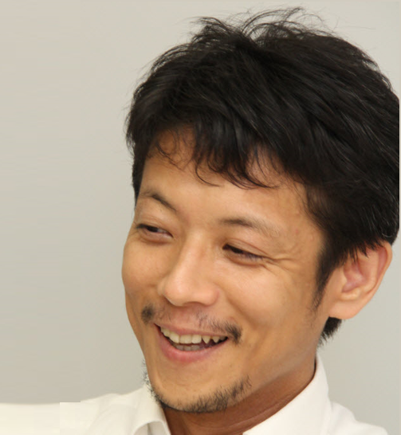

Speakers
坂本 佳史
日本アイ・ビー・エム株式会社

小島 克俊
日本アイ・ビー・エム株式会社
秋元 毅彦
日本アイ・ビー・エムデジタルサービス株式会社 (IJDS)
菊池 慶介
日本アイ・ビー・エムデジタルサービス株式会社 (IJDS)
内藤 剛史
株式会社ポケモン
柴本 健太郎
日本コカ・コーラ株式会社
白石 歩
日本アイ・ビー・エム シスエムズ・エンジニアリング株式会社（ISE）
平山 毅
日本アイ・ビー・エム株式会社
テクノロジー事業本部 クライアント・エンジニアリング本部 部長／エンジニアリングマネージャー
前 壮一郎
日本アイ・ビー・エム株式会社
テクノロジー事業本部 クライアント・エンジニアリング本部 デザイナー
曽根 健太郎
日本アイ・ビー・エム株式会社
テクノロジー事業本部 クライアント・エンジニアリング本部 データサイエンティスト
小島 公
日本アイ・ビー・エム株式会社
テクノロジー事業本部 クライアント・エンジニアリング本部 クラウドエンジニア
西戸 京子
日本アイ・ビー・エム株式会社
江川 聡子
日本アイ・ビー・エム株式会社
柳町 浩
日本アイ・ビー・エムデジタルサービス株式会社 (IJDS)
江澤 美保
株式会社クレスコ
AIサービスエバンジェリスト
平塚 博章（Hiro）
日本アイ・ビー・エム株式会社
IBMコンサルティング事業本部
萩野 たいじ
OutSystems
OutSystems Lead Community Manager
坂本 新
キンドリルジャパン

奥野 のぶ
日本アイ・ビー・エム株式会社

沼田 祈史
日本アイ・ビー・エム株式会社
量子 (リョウコ）
ぴゅあぴゅあ倶楽部

松尾惇士
日本アイ・ビー・エム株式会社
東京基礎研究所